AI²Lab · Research Release Handbook
AI²Lab
研究發佈指南.
發布論文成果、上傳模型，以及實驗室 NAS 的使用方式，全部整理在這一頁。照著做就不會漏掉；有問題直接找管理員。
- 維護者
- Wei-Hua Li
- 聯絡
- d12922009@csie.ntu.edu.tw
- GitHub
- AI-Application-and-Integration-Lab
- HF
- AI2Lab-NTU
- 更新
- 2026-11-01
建立 RepositoryA
- 寄信申請加入 Organization寄信到
d12922009@csie.ntu.edu.tw，信中附上你的 GitHub 帳號。
管理員會把你加入AI-Application-and-Integration-Lab。 - 用個人帳號新增 repository登入個人帳號，和平常建立 repo 一樣點擊 New repository。
- Owner 選擇 AI-Application-and-Integration-Lab其餘步驟（命名、Public / Private、README 等）和一般建立個人 repo 相同。
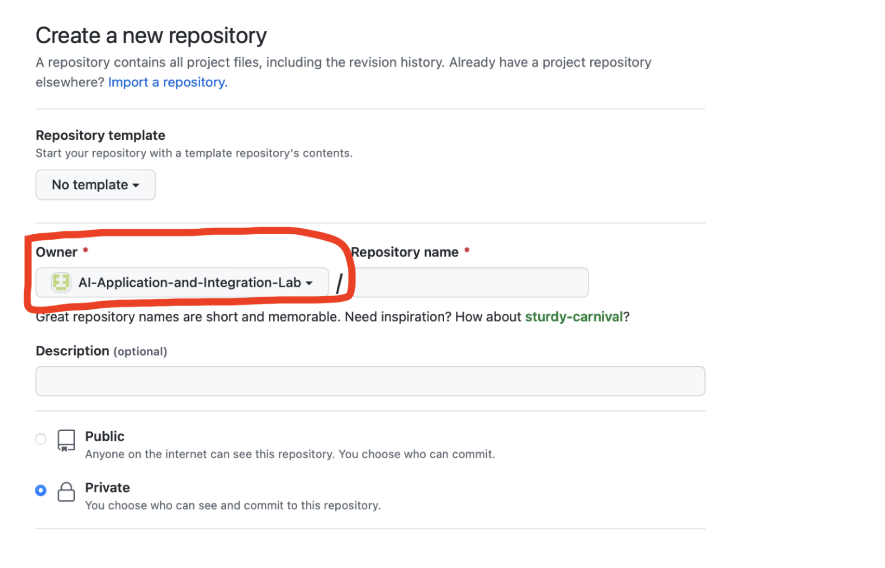
Owner 欄位選實驗室的 Organization
Organization ≠ 實驗室網站
程式碼 repo 放在 AI-Application-and-Integration-Lab。AISquareLab 是放實驗室網站與 Project Page 的帳號，不要把論文 repo 開在那裡。
設定 Email 通知B
repo 公開之後，會有人開 issue 或發 PR。請讓相關作者都能用 email 收到通知，免得漏看。
- 登入要接收通知的帳號
- 到對應 repo 點右上角 Watch → Custom勾選要接收的事件（Issues、Pull requests…），或直接選 All Activity。
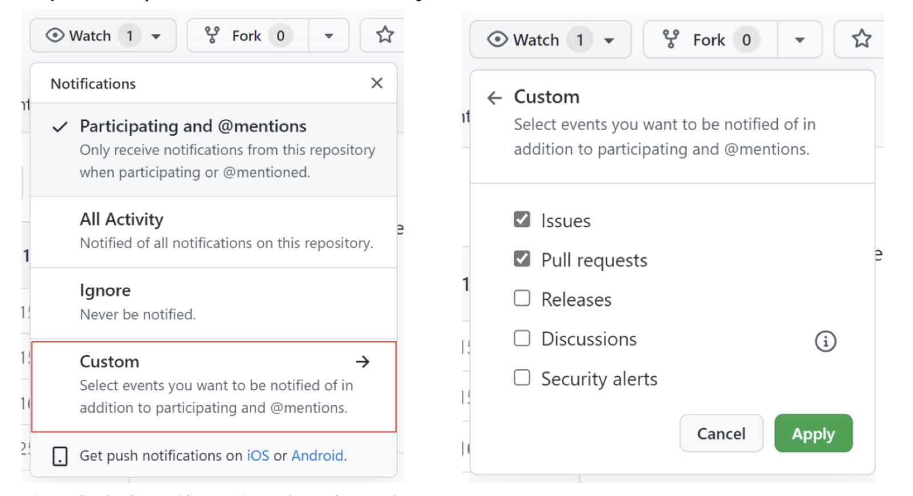
Watch → Custom，勾選 Issues、Pull requests - 點右上角頭像 → Settings → Notifications確認 Watching 有勾選 Email，並確認通知寄到你常用的信箱。
Project PageC
每篇論文都有一個 project page，掛在project page 主頁的 Publications 底下。
- 照模板寫好 html原始碼在 AISquareLab/aisquarelab.github.io，複製一份
project/底下的頁面來改。內容通常包含：標題、作者、會議名稱、Paper / Code / Poster 連結、Abstract。 - 把 html 交給實驗室管理員由管理員放上實驗室主頁，網址會是
aisquarelab.github.io/project/<論文名稱>.html。
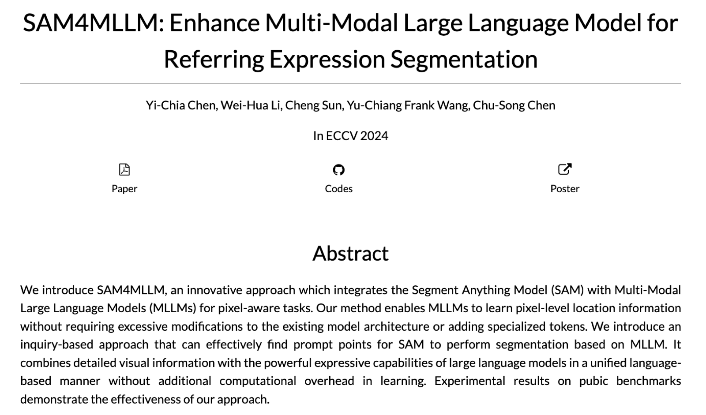
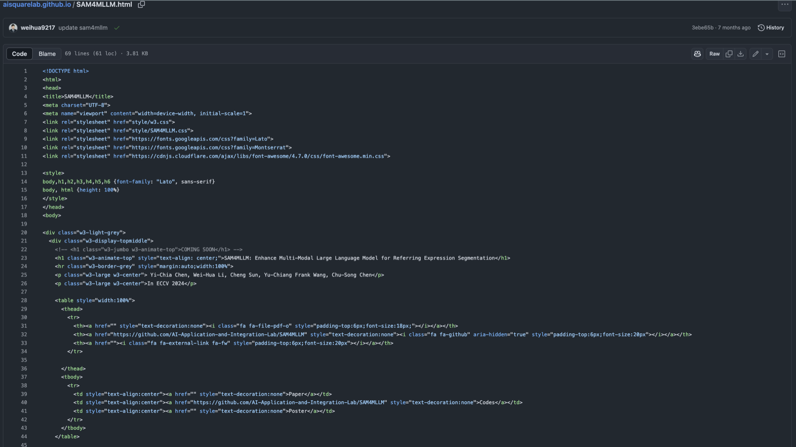
上傳前先改論文A
- 移除 acknowledgement（如果你的 camera-ready paper 原本有的話）
- 在 abstract 加上 code 連結，指向剛剛建立的 GitHub repo。（如果老師有要求公開 code 的話）
- 檢查
.tex裡有沒有不想公開的註解，arXiv 會公開原始檔。
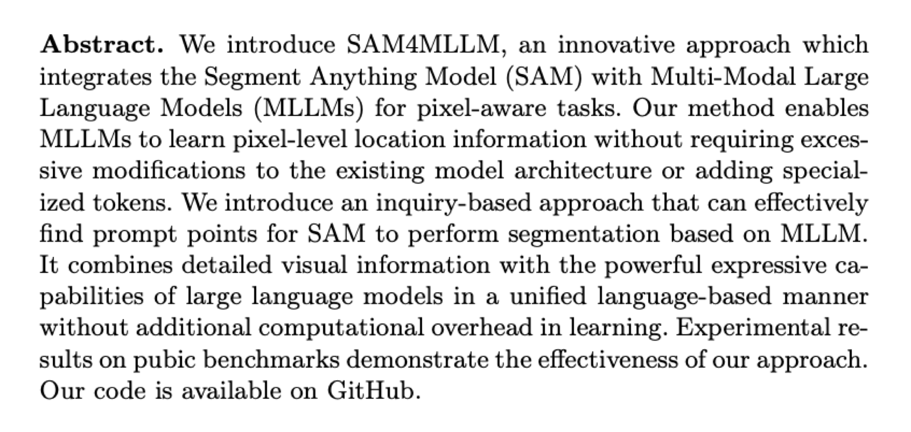
投稿流程B
- 登入 arXiv → START NEW SUBMISSION
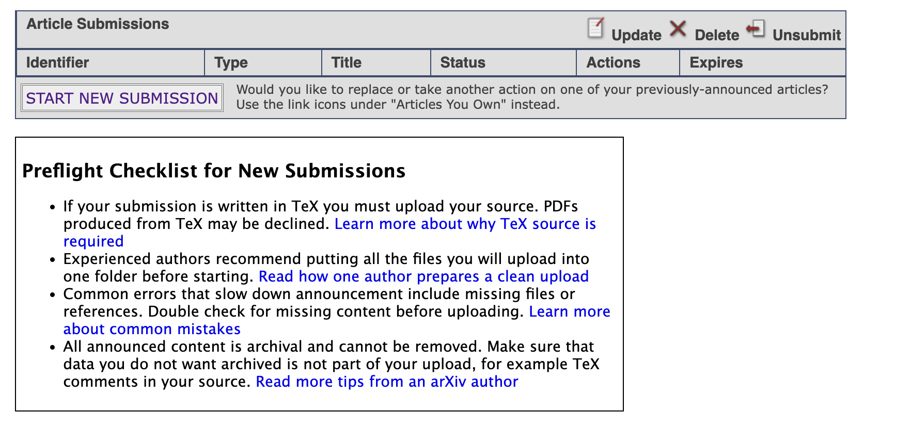
- 選擇 License選了之後無法更改。下方範例選的是 CC BY-NC-SA。
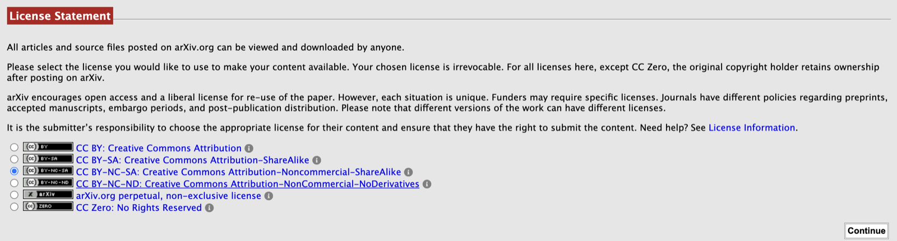
- 選擇分類依論文主題選一個主分類，可以再加 cross-list。
分類 適用範圍 cs.CV影像處理、電腦視覺、pattern recognition、scene understanding cs.CL自然語言處理（NLP） cs.AI其他 AI 領域（Vision、Robotics、ML、Multiagent、NLP 都有各自的分類，不屬於 cs.AI） - 上傳檔案上傳
main.tex、main.bib、圖片，以及main.bbl。也可以壓成.zip/.tar.gz一次上傳，arXiv 會自動解壓縮。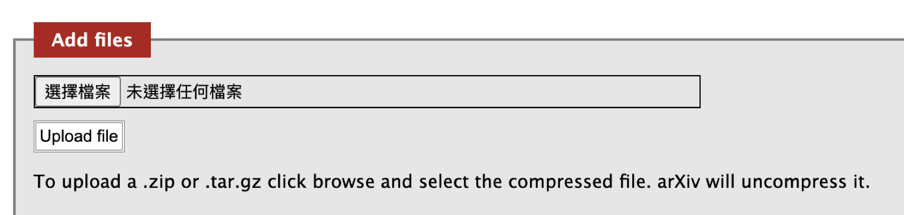
記得上傳 .bblarXiv 不會跑 BibTeX，少了
.bbl參考文獻會變成問號。從 Overleaf 取得：Logs and output files → Other logs and files → 下載output.bbl，改名成跟 tex 檔同名（例如main.bbl）。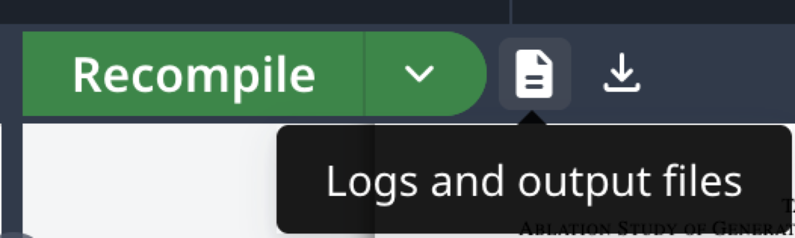
Overleaf：Logs and output files 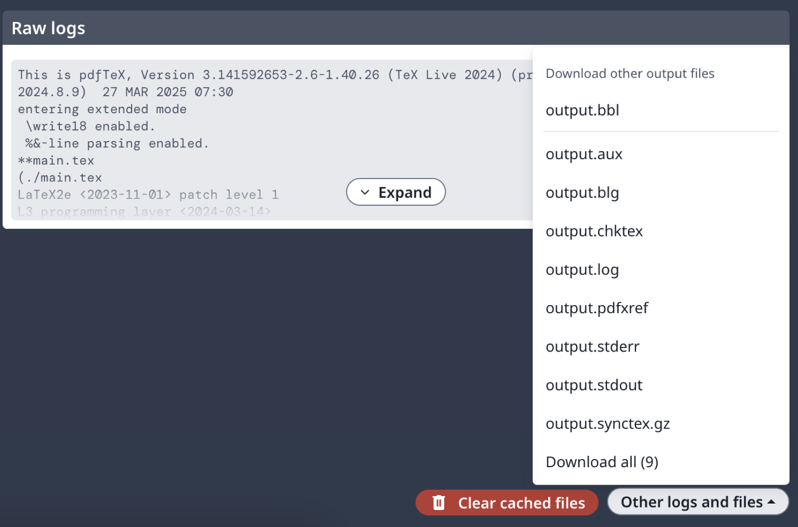
下載 output.bbl - 確認 Submission processed OK，填寫 metadataTitle、Authors、Abstract 照論文填寫。Comments 填會議資訊，例如
ECCV 2024。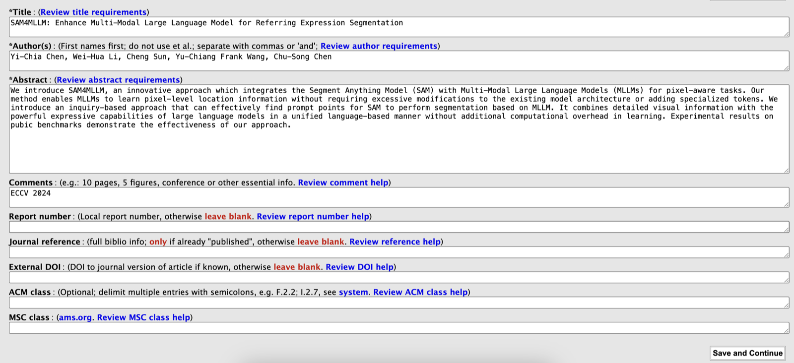
- Preview PDF，確認無誤後送出
- 審核通過後通知老師把 arXiv 寄來的審核通過信 cc 給老師，告訴老師已經上傳好了。
上傳模型權重A
- 透過邀請連結加入 AI2Lab-NTU先登入自己的 HF 帳號，再打開邀請連結加入我們實驗室的組織。
- New Model，Owner 選 AI2Lab-NTUrepo 名稱建議和 GitHub repo 相同。
- 上傳權重用網頁上傳，或用 CLI：
huggingface-cli login huggingface-cli upload AI2Lab-NTU/<repo> ./checkpoints - 把 HF 連結補回 GitHub README讓看 code 的人找得到權重，例如：
## Model Weights Download the pretrained weights from Hugging Face: https://huggingface.co/AI2Lab-NTU/<repo>
開始使用A
- 寄信申請帳號寄信到
d12922009@csie.ntu.edu.tw，信中附上你的姓名與學號。 - 照開通信登入並修改密碼管理員建立帳號後會寄信給你，信裡附有 NAS 連結。照著信中的步驟登入，並先修改密碼。
- 在 Users 底下建立自己的資料夾打開 File Station，進入
Users，點 建立 → 建立資料夾，用學號命名（例如r13922056）。個人的檔案請放在自己的資料夾裡。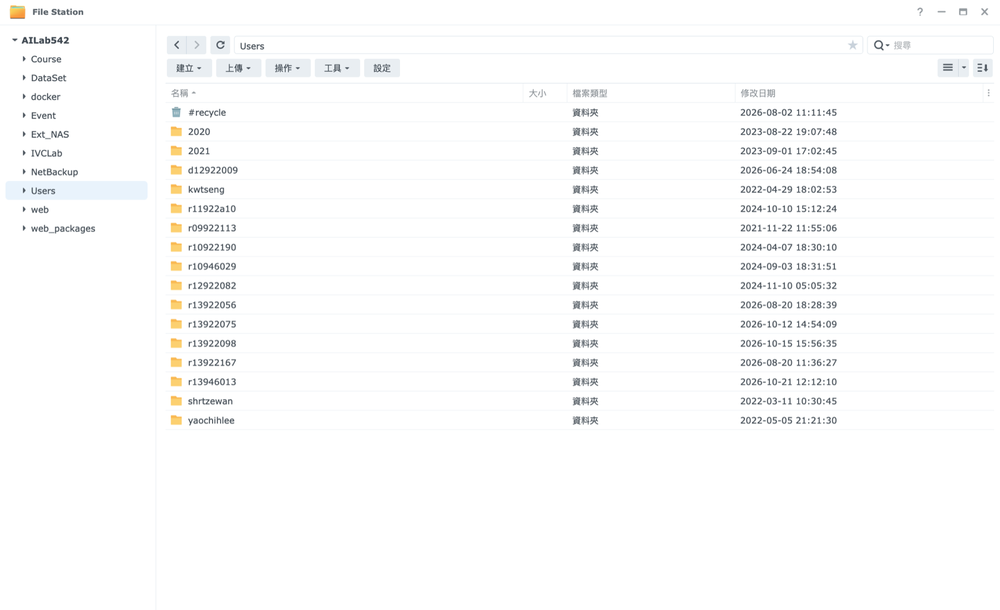
File Station → AILab542 → Users
上傳規則B
上傳的東西都要附上 README
每個上傳的資料夾（資料集、checkpoint、實驗結果）都要放一份 README.md，讓之後的學弟妹看得懂這是什麼、怎麼用。
可以參考這個格式：
# <資料夾名稱>
- 上傳者：王小明（r13922056）
- 日期：2026-11-01
- 對應論文 / 專案：<論文名稱或 GitHub repo 連結>
## 內容
這個資料夾放的是什麼、怎麼產生的。
## 檔案結構
- ckpt/ 訓練好的權重
- results/ 實驗結果
- data/ 前處理後的資料
## 使用方式
怎麼讀取或重現（指令、對應的 code）。